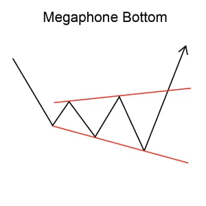
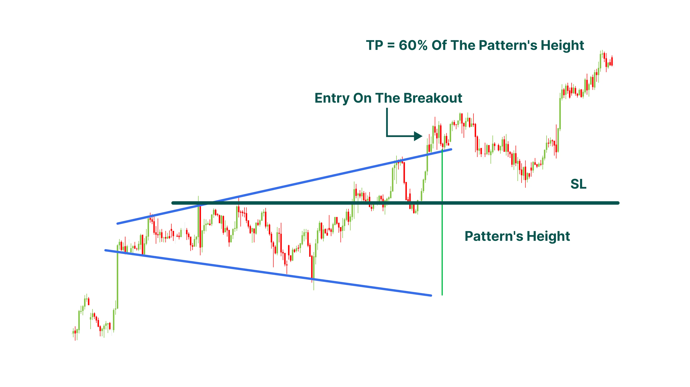

Implicaciones
Un Megaphone Bottom también conocido como un Bottom ampliado se considera una señal de aumento, lo que indica que la tendencia baja actual puede revertirse para formar una nueva tendencia ascendente.
Descripción
Esta rara formación se puede reconocer por los sucesivos altos y bajos más altos, que se forman después de un movimiento hacia abajo. Normalmente, dos altos más altos entre tres bajos más bajos forman el patrón, que se completa cuando los precios rompen por encima del segundo alto más alto y no caen por debajo de él.
El patrón se completa cuando, por lo general, en la tercera subida dentro del patrón, los precios se rompen por encima del máximo anterior pero no caen por debajo de este nivel de nuevo.

Figura 9: Megaphone Bottom
